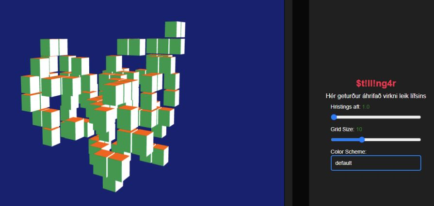
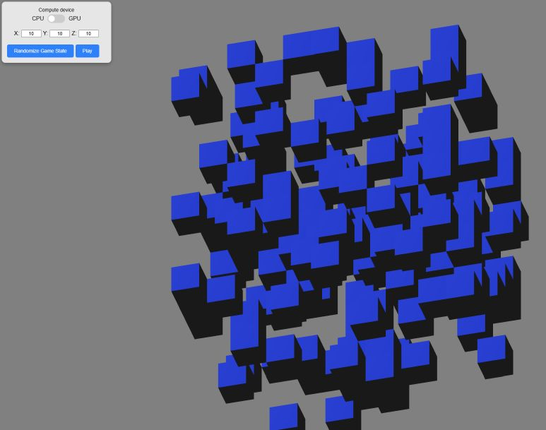
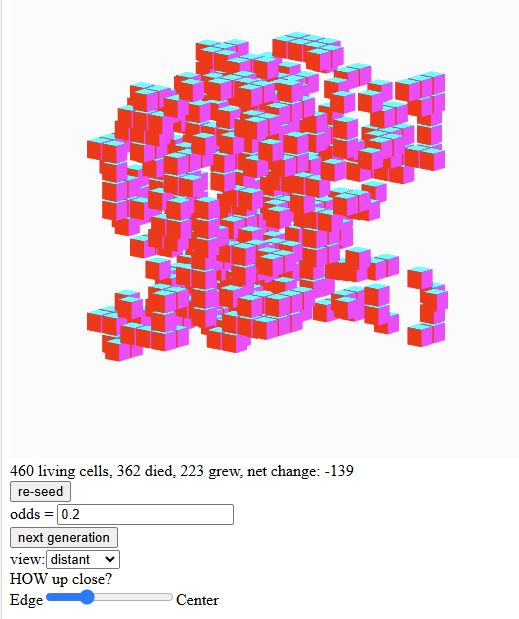
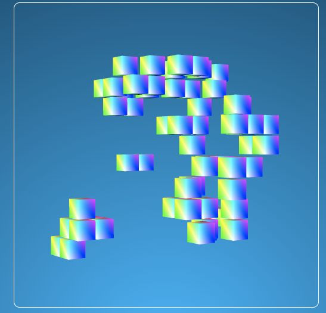
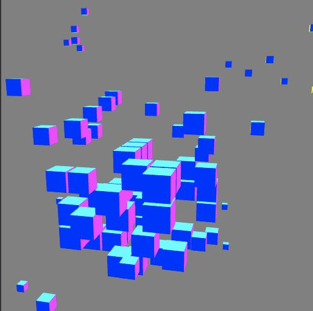

Nokkrar áhugaverðar lausnir á Forritunarverkefni 2
Tölvugrafík, haust 2024
Látið vita ef þið viljið ekki að ykkar lausn sé birt hér
- 
- Ari Gunnar Kristjónsson
- 
- Bence Koczogh
-
- Egill Magnússon
- 
- Einar Þór Jónsson
- 
- Jonathan Jakub Otuoma
- 
- Máni Freyr Helgason
hh (hja) hi.is, október 2024.